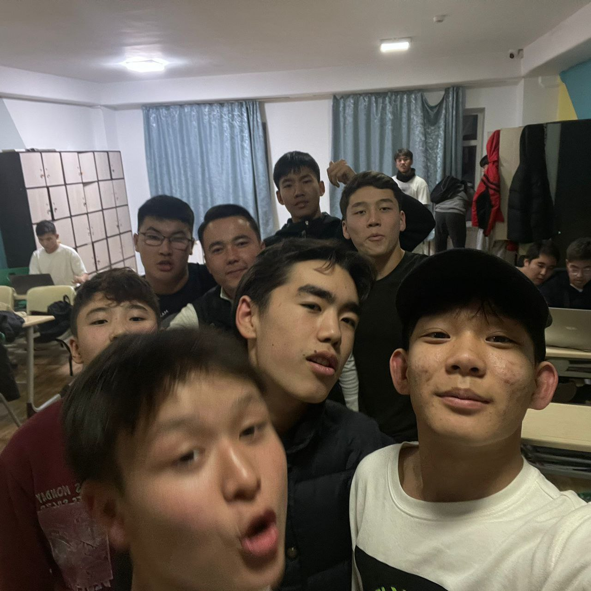

About me

Here you can see something that i wrote about myself
First feature that I want to mention is that I'm I really like to eat a lot and I like to sleep after lunch.
Usually in the sixth lesson after lunch, I always feel sleepy and I try not to fall asleep so as not to
listen to the topic, and sometimes if the lesson is not necessary, for example, how... I just take it and
sleep. I try to finish my work quickly and efficiently and continue to do whatever I want. I like to read
books about psychology and in general I like this topic.
And others informations you already found...